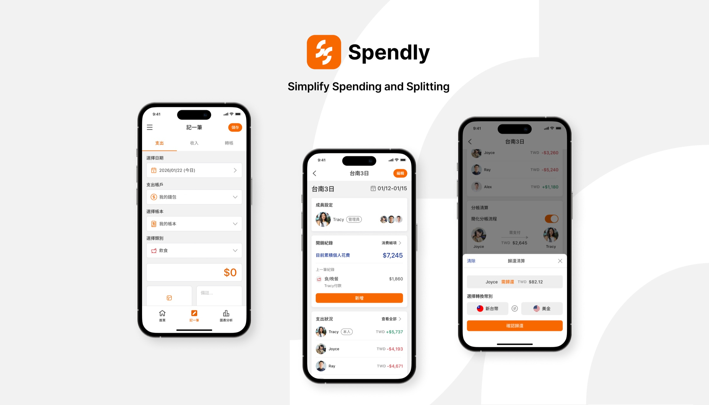
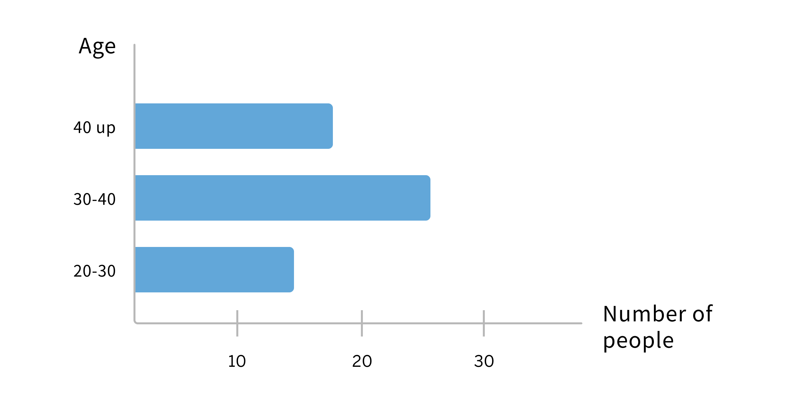
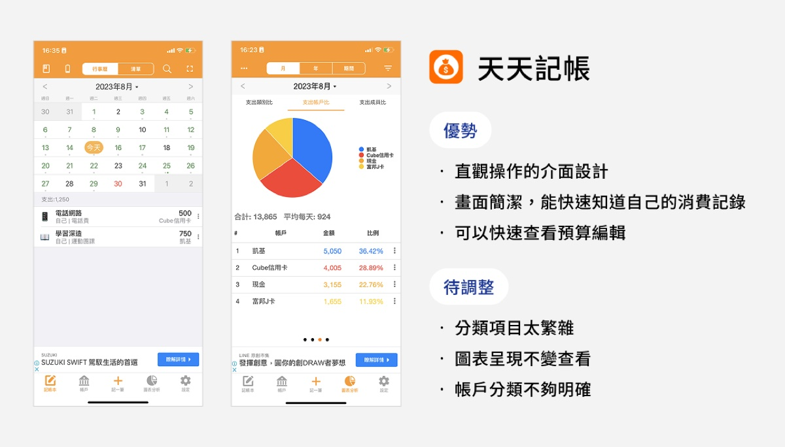
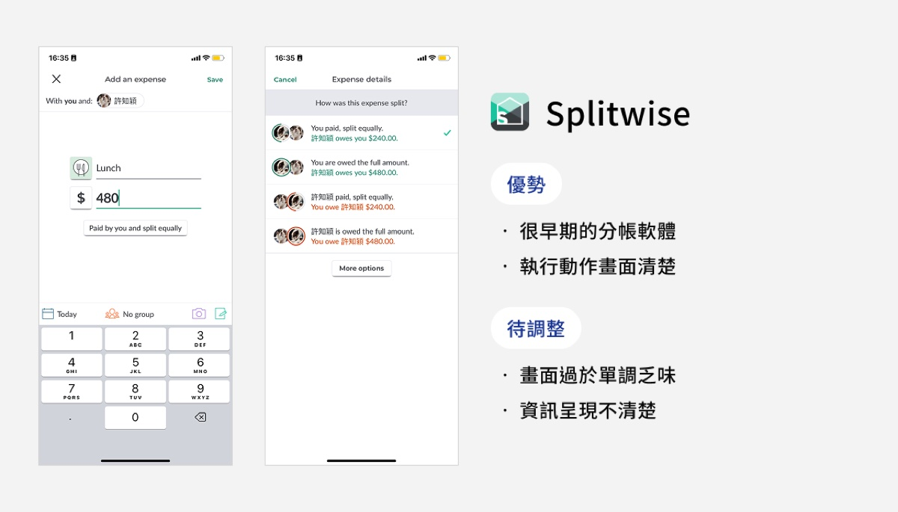
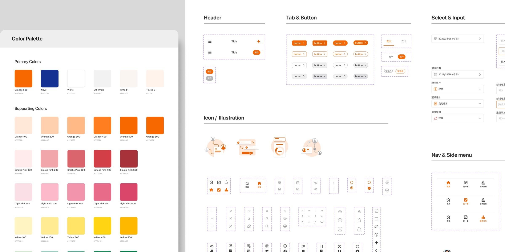
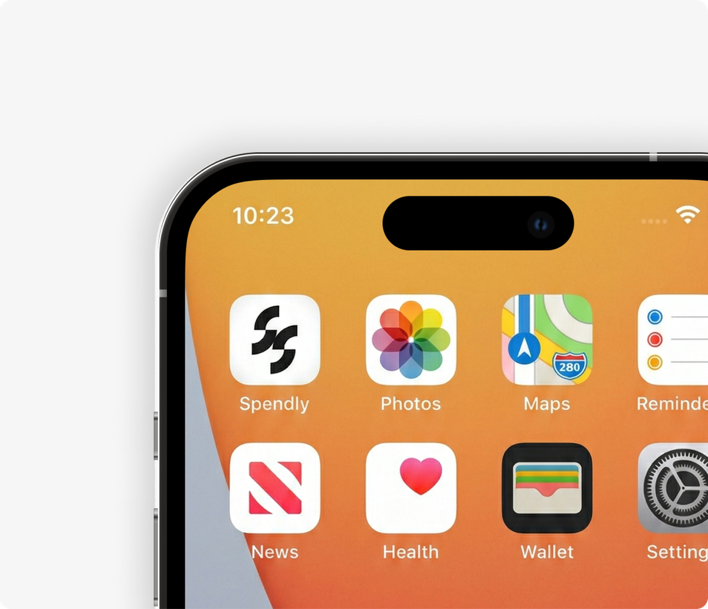
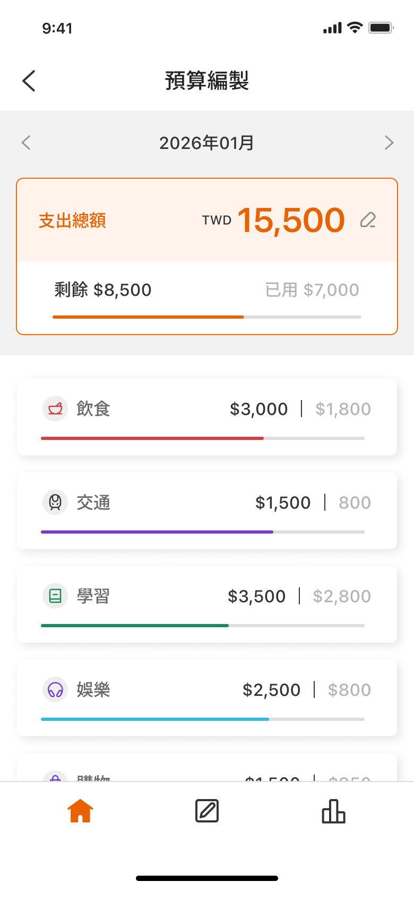
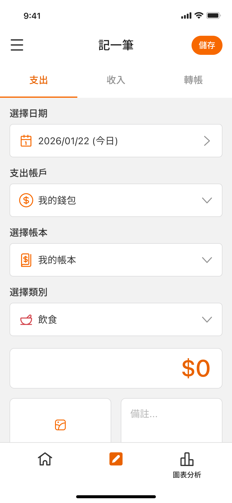
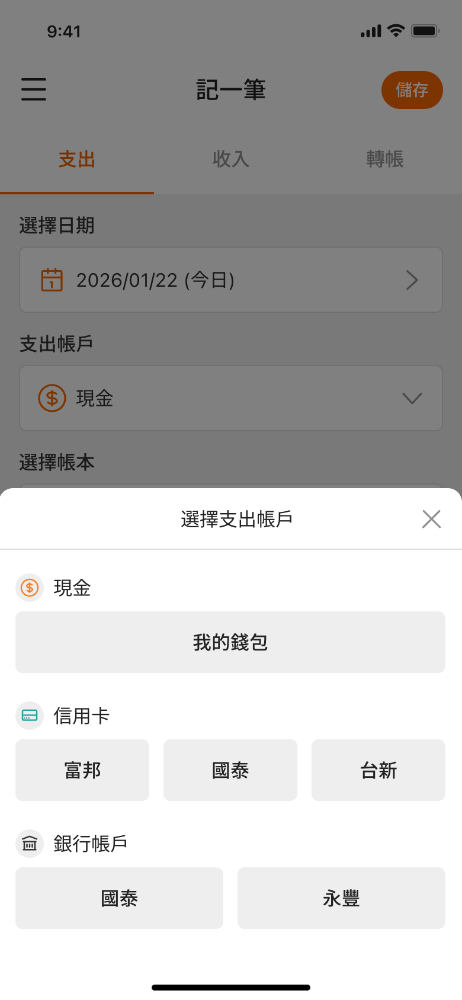
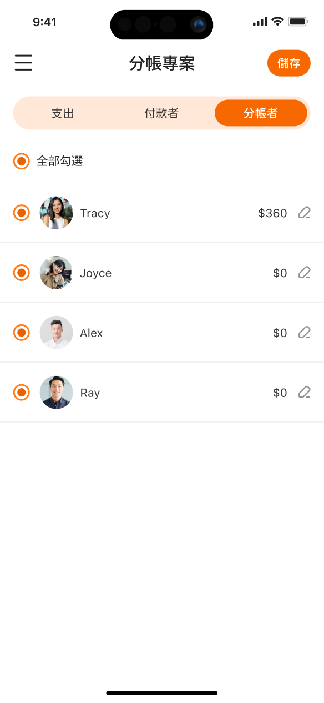

Spendly：全能記帳與分帳專家，一鍵搞定
專案背景 Background
記帳是多數人的數位生活日常，但研究發現，現有產品往往在「個人理財」與「社交分帳」之間存在斷層。使用者在聚餐或出遊後，常需在不同 App 間切換計算，導致流程破碎。Spendly 將「我的帳本」、「共享帳本」與「分帳專案」深度整合，讓理財不再只是單打獨鬥，而是能隨時隨地與他人協作，更符合實際使用情境。
設計流程 Design Process
- 需求定義
記帳與分帳是高頻的生活需求，然而繁瑣的輸入流程往往消磨使用者耐心。本專案聚焦於拆解操作痛點，將零碎的行為重構為流暢且直覺的數位體驗。
- 邏輯規劃
透過競品分析與使用者問卷收集到的數據收斂為核心功能邏輯，確保設計方向切合實際需求。
- 框架繪製
先以低保真原型快速探索解法方向，藉由易用性測試驗證決策假設，將邏輯風險前置處理，降低後期修改成本並提升設計效率。
- UI Design
針對全新品牌定位，從品牌視覺延伸至介面設計。建立系統化的視覺語言與規範，確保產品在不同載體下皆具備高度的一致性與辨識度。
- Design system
以模組化邏輯建構設計系統，讓樣式與元件形成可被延展的語言，支撐產品的長期成長與演進。
- Prototyping
製作高保真互動原型進行整體流程驗證，透過動態演示檢視操作細節與轉場節奏，確保設計邏輯在實際操作情境中成立。
發現問題 Problem
記帳工具並不缺功能，但使用者仍然記不下去。為了找出原因，我們從使用者訪談與問卷和競品分析兩個方向著手，分別了解使用者的真實行為，以及現有產品的體驗斷層。
使用者訪談與分析
在進入正式設計與分析之前，為了驗證初步設想並獲取更真實的市場反饋，我設計了一份針對「日常記帳與分帳習慣」的問卷調查。透過收集身邊不同背景友人的回饋，旨在從實際的使用者行為中挖掘出潛在痛點，為後續的功能架構與視覺體驗提供具備數據支撐的設計依據。
研究顯示 30-40 歲 為記帳軟體的主要使用族群。此年齡層正處於職涯衝刺期，生活步調極快且理財意識較強烈。因此，設計焦點不應僅停留在功能滿足，更需深度融合生活模式——例如：如何在繁忙生活中實現「秒速記帳」，以及提供更具有意義的分析報表。

透過問卷調查與使用者研究，我們歸納出目前記帳工具的兩大核心痛點
流程繁冗且介面複雜：過多的進階功能導致操作門檻過高，違背了記帳應「簡單、快速」的本質。
功能與情境的脫節：市面上的 App 雖然功能完整，但個人帳本與多人分帳功能往往是分開的，缺乏直覺的整合邏輯，迫使使用者須手動跨平台對帳與重複輸入。


競品分析
透過對市面主流記帳及分帳進行分析及拆解，我們發現理財市場存在顯著的體驗斷層。
記帳工具強調個人財務掌控與數據可視化，卻忽略多人協作時的流暢性與即時互動；分帳工具則專注於即時結算，但多停留在短期情境，缺乏與長期資產規劃的連動設計，導致使用者需在不同平台間來回切換。




設計目標 Design Approach
在數位理財工具高度分化的當下，我們不再從功能堆疊出發，而是回到使用者的真實生活情境。根據上述的研究與使用者回饋分析，我們重新梳理日常消費、社交互動與資產流動的完整旅程，進一步歸納出三個影響理財體驗的核心動機，作為本次設計策略的出發點。

生活花費是比較瑣碎的事情，
只想要簡單操作的平台

朋友聚餐常常
算不清楚
出國多換的錢用不完，
朋友剛好需要
“ 將記帳與分帳體驗無縫整合，實現單一平台內的完整財務流程 ”
1追求極致效率的輕量化記帳
生活支出本就細碎，使用者抗拒繁瑣的操作，更渴望一個介面清爽、能快速完成紀錄的平台，讓記帳回歸生活而不占用生活。
2解決聚餐拆帳
當多人聚餐點餐不一時，現有的計算方式往往模糊且緩慢，使用者需要更直覺的邏輯來處理複雜的拆帳需求，確保財務往來清晰透明。
3延伸社交情境並靈活換匯
旅遊後剩餘的外幣往往成為閒置資產，透過與朋友間的靈活調度與需求對接，能將原本「無效」的資源轉化為更有溫度的理財互動。
設計產出 Deliverables

進入解決方案設計前，先建立可持續發展的 Design System，透過系統化的元件庫與中性、耐看的視覺風格，確保平台整體一致性，並提升未來功能擴充與維護的彈性。
Logo Design
Spend + Split = Spendly。視覺上以首字母「S」作為基礎，透過幾何線條的對稱與切割，結合「消費」與「分帳」。雙重 S 形狀的交疊不僅象徵了資金的流動，更代表了人與人之間輕鬆分配開支的互動關係。

釐清使用者流程
在進入介面設計前，我們先將三個核心任務的使用者流程完整梳理出來，確認每個入口、分支與返回路徑都合理。分帳 Flow A 從「記一筆」出發，讓使用者完成基礎輸入後，再決定是否轉為分帳，維持單一路徑；分帳 Flow B 從側邊選單進入分帳專案，涵蓋群組管理、消費細項、簡化分帳流程與歸還清算；圖表分析則整合個人帳本、共享帳本與分帳專案的檢視路徑，並標示出需要 VIP 升級的節點，作為後續商業模式的規劃依據。


點擊圖片可放大
1首頁流程
首頁作為整體體驗的核心中樞，整合本月支出總覽、快速記帳入口與預算狀態，讓使用者在最少操作步驟內掌握財務全貌。本流程設計重點在於：
- 資訊集中化：以月份為單位整合收支與預算，降低跨頁查找成本
- 快速決策路徑：從首頁可直接進入記帳、預算編輯或類別細節
- 層級漸進展開：由總覽 → 類別 → 明細，確保資訊清晰且不過載
- Side Menu 補充次要功能：避免首頁承載過多選項，維持主任務聚焦
透過此流程重構，使用者無需來回切換頁面，即可完成「查看 → 管理 → 調整」的完整操作循環。



2記一筆流程
「記一筆」被定義為高頻且必須低摩擦的核心任務。我們的目標是在維持資訊完整性的前提下，壓縮操作步驟，降低認知負擔。本流程優化重點：
- 單頁式結構整合：日期、帳戶、帳本與類別集中於同一頁完成設定
- 底部彈層選擇機制：避免頁面跳轉，維持操作情境連續性
- 清晰資訊分區：以模組化區塊分層，降低視覺干擾
- 即時金額回饋：強化輸入確認感，減少誤操作
透過流程壓縮與互動優化，使用者可在數秒內完成一筆完整紀錄，讓記帳行為真正融入日常。



3分帳流程
「分帳」被定義為高資訊量且需高準確性的協作任務。我們的目標是透過「線性引導」將複雜的代付與分攤邏輯拆解，確保使用者在多人旅遊或團體聚餐時，能快速釐清帳務歸屬。
- 直覺式路徑分流：於記帳頁整合「分帳專案」入口，使用者可完成基礎輸入後再決定是否轉為分帳，維持單一路徑邏輯。
- 分段式頁籤引導：以「支出 / 付款者 / 分帳者」三步驟拆解複雜分配流程，降低資訊過載與理解成本。
- 群組快速選取機制：透過側向彈層選擇專案，減少頁面跳轉，保留原有操作脈絡。
- 自動化金額校驗：即時對應分配金額與總額，確保多人分帳的準確與透明。



🔗 View Full Prototype
完整高保真設計稿與互動動線請參閱 Figma Prototype →
Thanks for stopping by! ☺